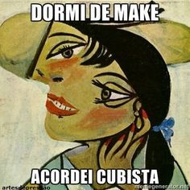
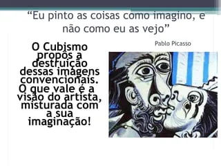

Descubra as características e influências do Cubismo, uma das vanguardas artísticas mais revolucionárias.
Assista ao vídeo para entender como o Cubismo mudou a arte moderna.
Explore memes divertidos que capturam a essência e o impacto do Cubismo.
 Como o Cubismo desafia a forma tradicional de representar objetos e pessoas na arte?
Quais artistas do Cubismo mais te impressionaram e por quê?